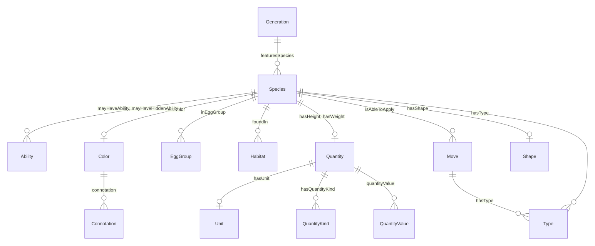

Pokemon LinkML Model¶
This is the LinkML adaptation of the Pokemon Knowledge Graph ontology, providing a structured schema for representing Pokemon-related data. The model captures the rich relationships and attributes of Pokemon species, moves, types, abilities, items, and their interactions in the Pokemon universe. A schema for the ontology, covering the Pokemon world as it is presented in games and anime television series.
Purpose¶
This project was created for the following reasons:
Educational and Training¶
This ontology is simple enough to be approachable for those new to LinkML, knowledge graphs, ontologies, and linked data technologies. Unlike a minimal Person schema, it includes a richer set of classes and slots that demonstrate key modeling concepts entities, attributes, and relationships without requiring deep domain expertise. At the same time, it is not as overwhelming as large, flagship schemas such as BioLink, making it a practical starting point for learning and experimentation.
LinkML Development¶
This is a good schema to test and demonstrate new LinkML features such as generators, serializers, and other tooling. Besides the schema the knowledge graph includes a large set of data (over 100k triples) that can be used to test LinkMLs data validation and transformation capabilities. It also links to external resources such as Dbpedia and QUDT, providing use cases for handling external references and complex data types.
AI Agent Development Playground¶
Knowledge graphs take combined with Large Language Models (LLMs) take the agentic development to the next level. This project provides rich ontology and large data set for testing techniques like RAG and ontology based agent assistance.
Schema Overview¶
The core schema is defined in linkml_pokemon.yaml. The table below summarizes its components, including how many are specific to the Pokemon domain versus imported from external schemas.
| Total | Pokemon Domain | Imported | |
|---|---|---|---|
| Classes | 58 | 34 | 24 |
| Slots | 83 | 32 | 51 |
| Enums | 1 | 1 | 0 |
| Imported schemas | 4 | FOAF, DBpedia, OWL, QUDT |
And here is a high-level ERD diagram of the schema structure, key classes, and relationships. Note this is a simplified extraction from the larger schema. For a complete reference, see the Data Dictionary.

Core Entities¶
The core entities in the schema represent the fundamental concepts of the Pokemon world:
| Class | Description |
|---|---|
| Species | A Pokemon species with stats, types, abilities, height, weight, color, habitat |
| Move | Battle moves with base power, accuracy, PP, type, and effect descriptions |
| Type | The 18 Pokemon types (Fire, Water, Grass, etc.) with strengths and weaknesses |
| Ability | Special abilities that each Pokemon can have, including hidden abilities |
| Item | Objects the player can use - Poke Balls, medicines, hold items, berries, TMs/HMs |
Relationships¶
The schema models the interconnected nature of the Pokemon world:
- Evolution: Species evolve from and to other species (
evolvesFrom,evolvesTo) - Type system: Species and moves both have types (
hasType) - Abilities: Species may have regular or hidden abilities (
mayHaveAbility,mayHaveHiddenAbility) - Move learning: Pokemon learn moves by leveling up, breeding, or TMs
- Geography: Species are found in habitats; places contain other places and are organized into regions
- Measurements: Height and weight use QUDT quantities with proper units
Example: Pikachu¶
id: pokemon:pikachu
name: Pikachu
description: >-
Pikachu is an Electric-type Pokemon. It evolves from Pichu when leveled up
with high friendship and evolves into Raichu when exposed to a Thunder Stone.
hasColor: dbpedia:Yellow
hasCatchRate: 190
hasType:
- id: pokemon:PokemonType_Electric
name: Electric
hasGenus: Mouse Pokemon
foundIn:
- pokemon:Habitat_Forest
Data Files¶
The knowledge graph data originates from the Pokemon Knowledge Graph project. A copy of the original dataset is included in the original/ directory:
| File | Description |
|---|---|
poke-a.nq |
Full knowledge graph dump in N-Quads format (~29 MB) |
pokemon-ontology.ttl |
Original Pokemon ontology in Turtle format |
The original data contains several errors that have been identified and patched. See Data Patches for full details.
| Patch | Fix |
|---|---|
| Patch 1 | Fix weight units from KiloM (Kilometer) to KiloGM (Kilogram) |
| Patch 2 | Add missing rdf:type to QuantityValue nodes |
| Patch 3 | Fix berry size quantityKind from Height to Diameter |
Generated Artifacts¶
The following artifacts are generated from the schema and available in the project/ directory:
| Artifact | File | Description |
|---|---|---|
| GraphQL | linkml_pokemon.graphql |
GraphQL schema definition |
| OWL | linkml_pokemon.owl.ttl |
OWL ontology in Turtle format |
| Pydantic | linkml_pokemon.py |
Python Pydantic v2 models |
| TypeScript | linkml_pokemon.ts |
TypeScript type definitions |
| JSON Schema | linkml_pokemon.schema.json |
JSON Schema for data validation |
| JSON-LD | linkml_pokemon.context.jsonld |
JSON-LD context for linked data |
| SHACL | linkml_pokemon.shacl.ttl |
SHACL shapes for RDF validation |
| SQL | linkml_pokemon.sql |
SQL DDL for relational databases |
Data Dictionary¶
The Data Dictionary provides the complete reference for all classes, slots, enumerations, and type definitions in the schema, including class diagrams and ERD visualizations.
Quick Start¶
# Clone the repository
git clone https://github.com/vladistan/linkml-pokemon.git
cd linkml-pokemon
# Install dependencies
uv sync --group dev
# Generate all artifacts from the schema
just gen-project
# Serve the documentation locally
just serve-docs
# Run tests
just test
Source¶
- Repository: github.com/vladistan/linkml-pokemon
- Schema:
src/linkml_pokemon/schema/linkml_pokemon.yaml - Pokemon Knowledge Graph: pokemonkg.org